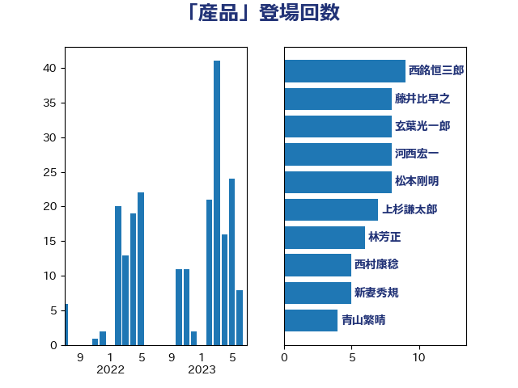

単語「産品」

| 西銘恒三郎 | 自由民主党 | 9 回 |
| 藤井比早之 | 自由民主党 | 8 回 |
| 玄葉光一郎 | 立憲民主党 | 8 回 |
| 河西宏一 | 公明党 | 8 回 |
| 松本剛明 | 自由民主党 | 8 回 |
| 上杉謙太郎 | 自由民主党 | 7 回 |
| 林芳正 | 自由民主党 | 6 回 |
| 西村康稔 | 自由民主党 | 5 回 |
| 新妻秀規 | 公明党 | 5 回 |
| 青山繁晴 | 自由民主党 | 4 回 |
| 長友慎治 | 国民民主党 | 3 回 |
| 野中厚 | 自由民主党 | 3 回 |
| 西野太亮 | 自由民主党 | 3 回 |
| 渡辺博道 | 自由民主党 | 3 回 |
| 今枝宗一郎 | 自由民主党 | 3 回 |
| 阿部弘樹 | 日本維新の会 | 2 回 |
| 金子恵美 | 立憲民主党 | 2 回 |
| 角田秀穂 | 公明党 | 2 回 |
| 藤岡隆雄 | 立憲民主党 | 2 回 |
| 萩生田光一 | 自由民主党 | 2 回 |
| 若宮健嗣 | 自由民主党 | 2 回 |
| 細田健一 | 自由民主党 | 2 回 |
| 秋葉賢也 | 自由民主党 | 2 回 |
| 湯原俊二 | 立憲民主党 | 2 回 |
| 渡辺周 | 立憲民主党 | 2 回 |
| 渡辺創 | 立憲民主党 | 2 回 |
| 池畑浩太朗 | 日本維新の会 | 2 回 |
| 岩本剛人 | 自由民主党 | 2 回 |
| 尾身朝子 | 自由民主党 | 2 回 |
| 高木啓 | 自由民主党 | 1 回 |
| 長島昭久 | 自由民主党 | 1 回 |
| 金子恭之 | 自由民主党 | 1 回 |
| 野村哲郎 | 自由民主党 | 1 回 |
| 野上浩太郎 | 自由民主党 | 1 回 |
| 菅家一郎 | 自由民主党 | 1 回 |
| 田名部匡代 | 立憲民主党 | 1 回 |
| 田中健 | 国民民主党 | 1 回 |
| 浜田靖一 | 自由民主党 | 1 回 |
| 泉健太 | 立憲民主党 | 1 回 |
| 江島潔 | 自由民主党 | 1 回 |
| 武部新 | 自由民主党 | 1 回 |
| 梅谷守 | 立憲民主党 | 1 回 |
| 梅村みずほ | 日本維新の会 | 1 回 |
| 日下正喜 | 公明党 | 1 回 |
| 斉藤鉄夫 | 公明党 | 1 回 |
| 庄子賢一 | 公明党 | 1 回 |
| 岸真紀子 | 立憲民主党 | 1 回 |
| 山本剛正 | 日本維新の会 | 1 回 |
| 小野田紀美 | 自由民主党 | 1 回 |
| 小沼巧 | 立憲民主党 | 1 回 |
| 小林鷹之 | 自由民主党 | 1 回 |
| 小島敏文 | 自由民主党 | 1 回 |
| 小山展弘 | 立憲民主党 | 1 回 |
| 堂故茂 | 自由民主党 | 1 回 |
| 堀内詔子 | 自由民主党 | 1 回 |
| 勝部賢志 | 立憲民主党 | 1 回 |
| 勝俣孝明 | 自由民主党 | 1 回 |
| 八木哲也 | 自由民主党 | 1 回 |
| 保岡宏武 | 自由民主党 | 1 回 |
| 伊藤忠彦 | 自由民主党 | 1 回 |
| 中川康洋 | 公明党 | 1 回 |
| 上月良祐 | 自由民主党 | 1 回 |
| ながえ孝子 | 無所属 | 1 回 |